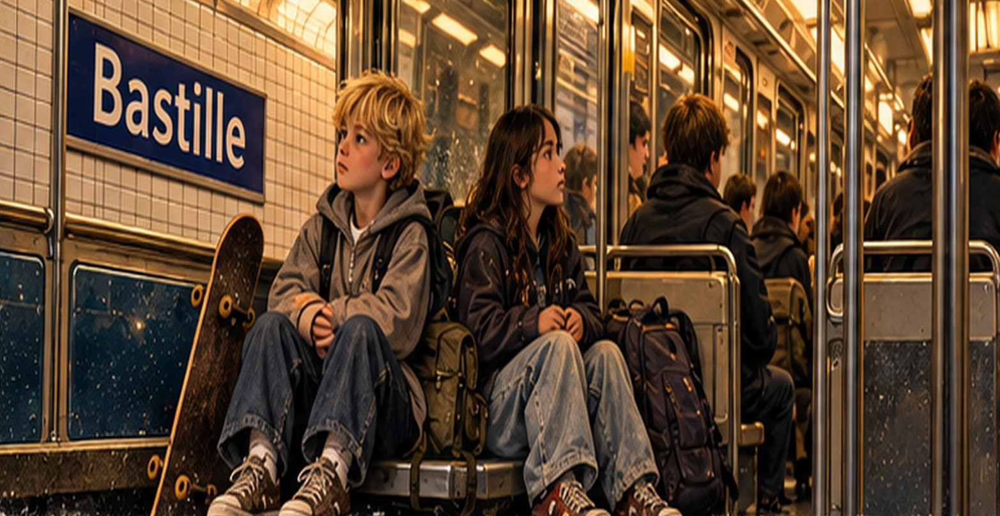
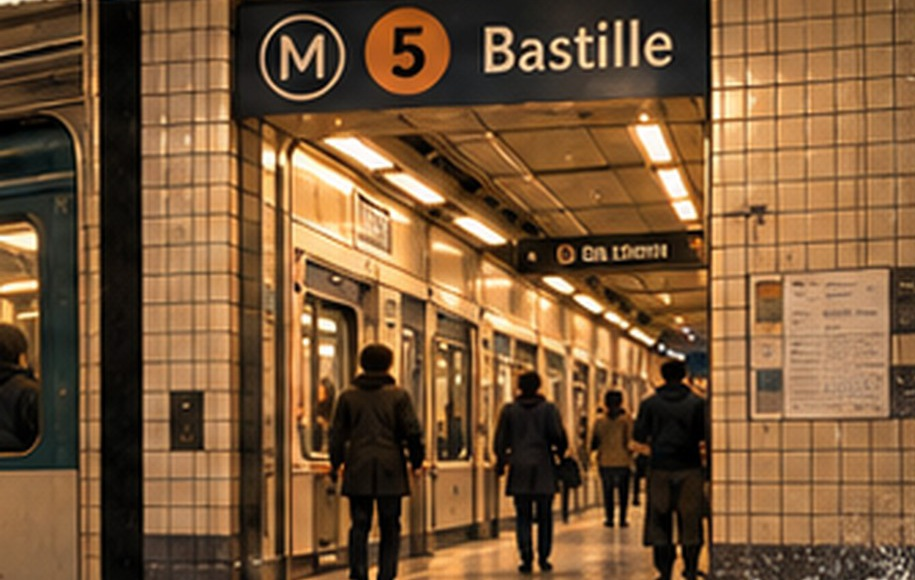
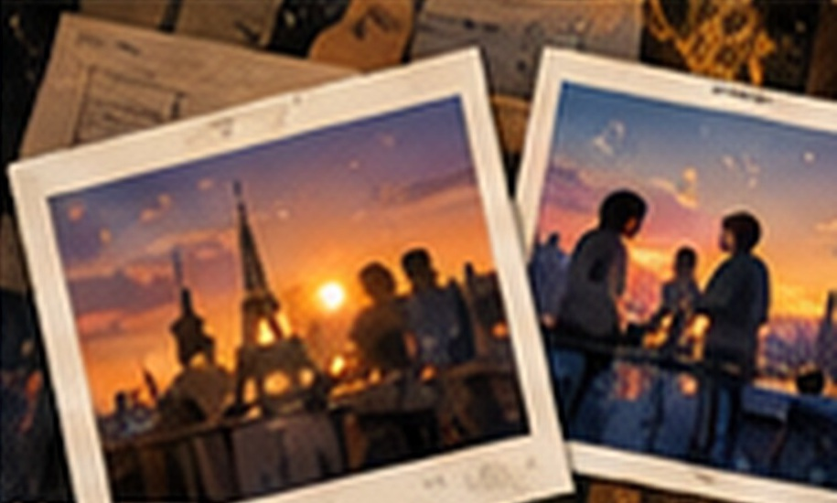

Thế giới
trong mơ
của tôi
$subtitle
ĐỌC CHƯƠNG →KHÁM PHÁ FILM →XEM BẢN DỰNG ▷~ $minutes phút đọc
THE ORIGINAL / UNCHANGED
$title
Nguyên văn của Jason. Cảnh hai đứa trẻ trên tàu là điều anh quan sát; câu chuyện bữa tối là điều anh tưởng tượng. Con vật ngồi trên mái nhà là một ẩn dụ thị giác, không có trong bản thảo.
AN INTERACTIVE LITERARY ARTIFACT
The Borrowed Reel
Ba lớp cùng một khoảnh khắc: điều đã quan sát, điều đã tưởng tượng, và màu phim còn sót lại.

The real moment
Hai đứa trẻ, giày đã sờn, một tấm ván trượt và cuộc điện thoại mà Jason chỉ hiểu lõm bõm.
Màu tóc và diện mạo trong tranh là lựa chọn minh họa, không phải chi tiết được ghi trong bản thảo.
Thanh trượt thay đổi cách xử lý màu của hình minh họa, không thay đổi điều đã xảy ra.


MEDIA / EDIT PREVIEWS
Một thước phim mượn lại.
Những cảnh hiện lên trong đầu.
Các bản dựng dùng trích đoạn nguyên văn và hình minh họa. Giọng đọc của Jason đang chờ bản thu; nhịp cắt và thời gian chữ sẽ được chỉnh theo giọng đọc thật.
- Teaser · 24 giây · 9:16
- Discovery · 60 giây · 9:16
- Feed · 45 giây · 3:4
- Trích đoạn · 2 phút · 9:16
- Trích đoạn · 2 phút · 16:9
- Kịch bản đọc toàn bộ chương
Đây là minh họa và âm nền tổng hợp, không phải hình ảnh hay âm thanh ghi lại cuộc gặp thật.


Chapter collection
Các tệp PDF là bản thử biên tập. Bộ nguồn gốc mang nhãn 06 được lưu nguyên vẹn trong kho tham chiếu của ZIP.
Version history
$revision_note
$revisionsTải nguyên bản do tác giả cung cấp →
Quan sát, tưởng tượng và hình minh họa
Các câu đối thoại và chi tiết bữa tối thuộc hình dung của người kể. Màu tóc nhân vật, con vật trên mái nhà và khung cảnh thành phố là diễn giải thị giác. Không thêm chúng vào bản văn như những sự kiện đã xảy ra.
Hình điện thoại trong bộ ý tưởng không tái hiện chính xác chiếc điện thoại bàn phím màn hình đen trắng được tả trong bài. Các khung minh họa được giữ như ý niệm; bản văn là nguồn cho chi tiết câu chuyện.
Phần tương tác không thu thập hay lưu câu trả lời. Hình từ bảng ý tưởng có giới hạn độ phân giải gốc; bản in thương mại cần tệp và thông số in phù hợp.
“$closing_quote”